We live in a simulation, and I have slides to prove it
On Saturday night Ritah hosted a presentation night, and we went into some deep topics. My case, made with 25 slides and a straight face, was that we live in a simulation.
{kind=link}
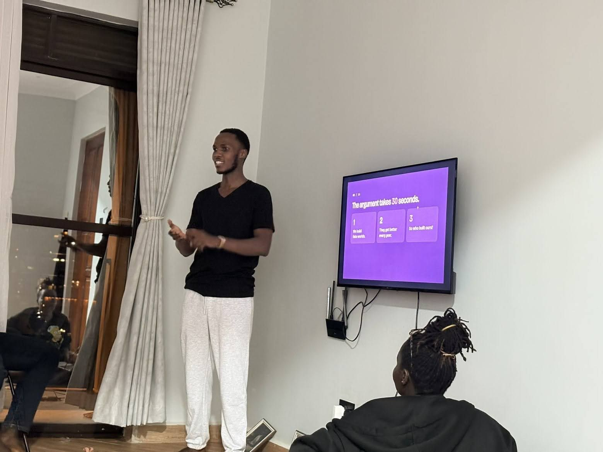
I wasn't the only one with evidence. One friend opened the files on boda boda riders, who turn out to be a nationwide intelligence network. Another showed that the Jim Carrey we see today is a clone.
{kind=link}
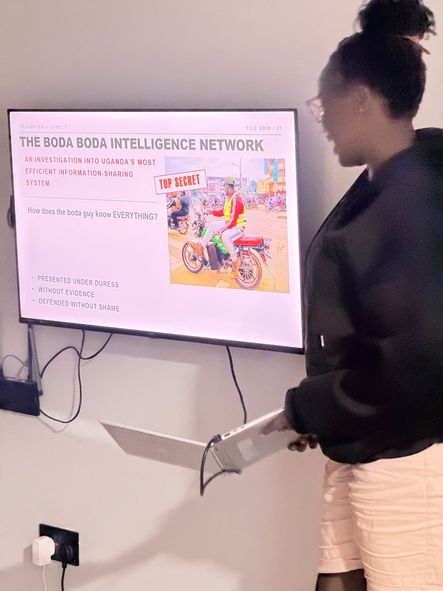
{kind=link}
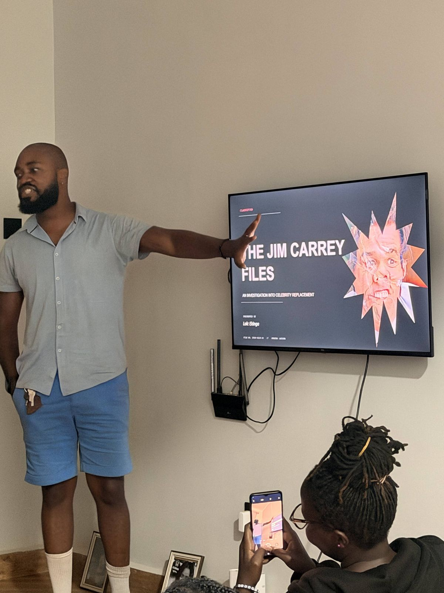
{kind=link}
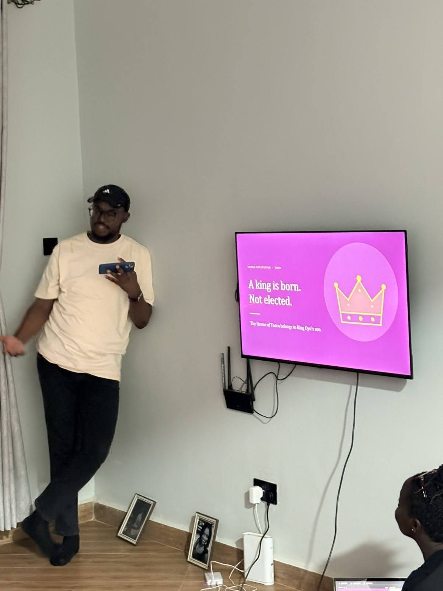
The argument
The whole argument takes 30 seconds. We already build fake worlds, and they get better every year. Follow that far enough and you have to ask who built ours.
Exhibit A: we already build fake worlds
In 1972 the best graphics on Earth were two lines and a square. In 2025, Google DeepMind's Genie 3 turns a typed sentence into a world you can walk around in.
{kind=link}
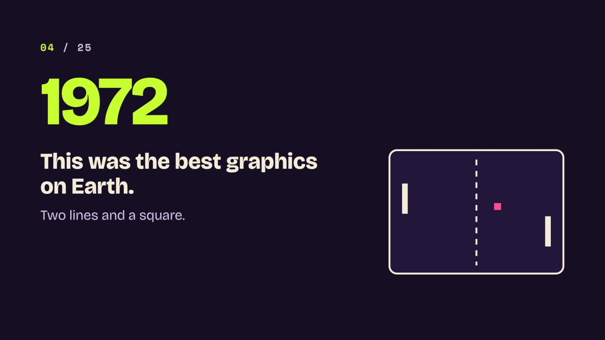
{kind=link}
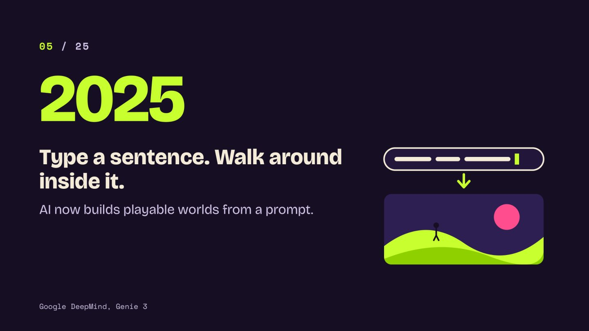
In 2023, researchers at Stanford and Google put 25 AI characters in a small digital town. One of them decided to throw a party, and the rest spread the word and showed up.
That's where Nick Bostrom's argument from 2003 comes in. If any civilisation can simulate minds and bothers to do it often, simulated minds will far outnumber real ones. So if you pick a mind at random, it's probably simulated. On my slide that was one pink dot in a sea of purple ones, and the question was whether you're the pink one.
Exhibit B: the universe runs like software
Nothing travels faster than 299,792,458 metres per second, which looks a lot like a computer's top clock speed. Physics also has a smallest useful length. That's my evidence that reality has pixels.
My favourite slide was about measurement. Particles stay blurry until someone measures them, and games use the same trick to save memory, because they only draw what you're looking at. The physicist James Gates even found error-correcting codes in the maths of supersymmetry, the same kind your browser uses.
{kind=link}
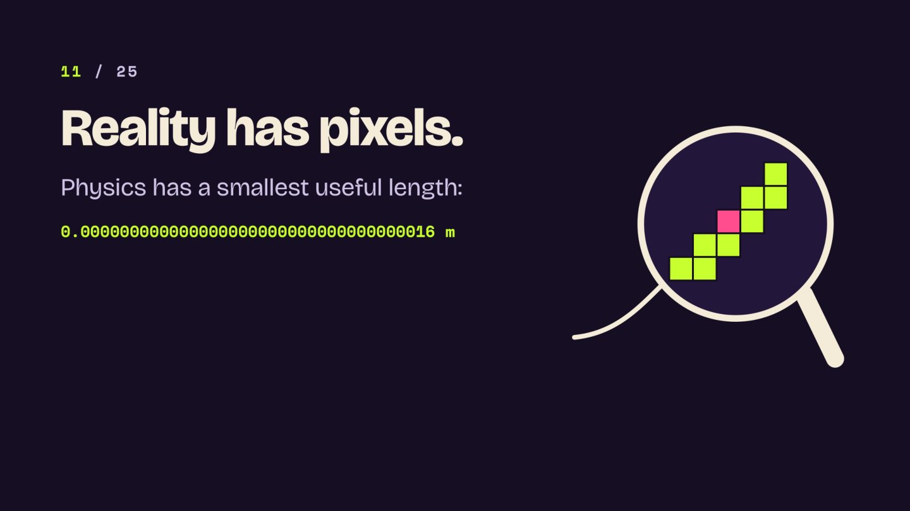
{kind=link}
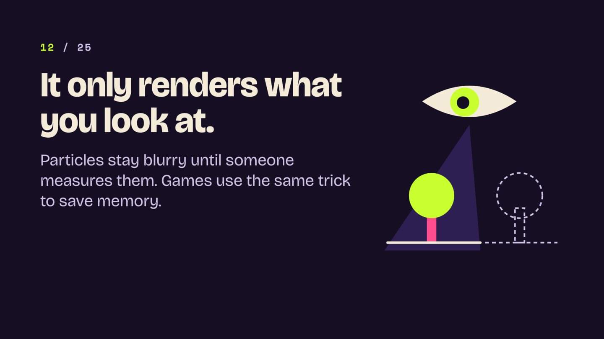
Exhibit C: the glitches
Déjà vu is the same frame loading twice. Most people remember the Monopoly man with a monocle, but he never had one, so somebody must have patched him. Astronomers have found billions of planets and nobody home, maybe because the developer only rendered us.
And you know the guy who walks past at the same time every day and says the same thing. That's an NPC.
{kind=link}
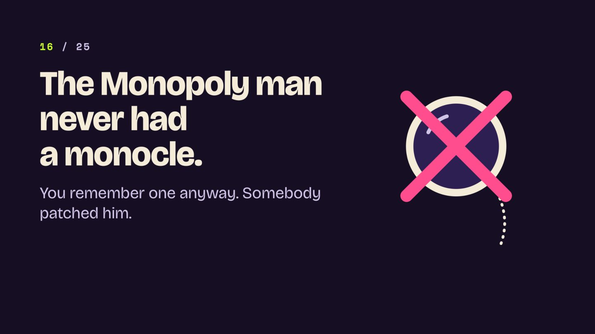
{kind=link}
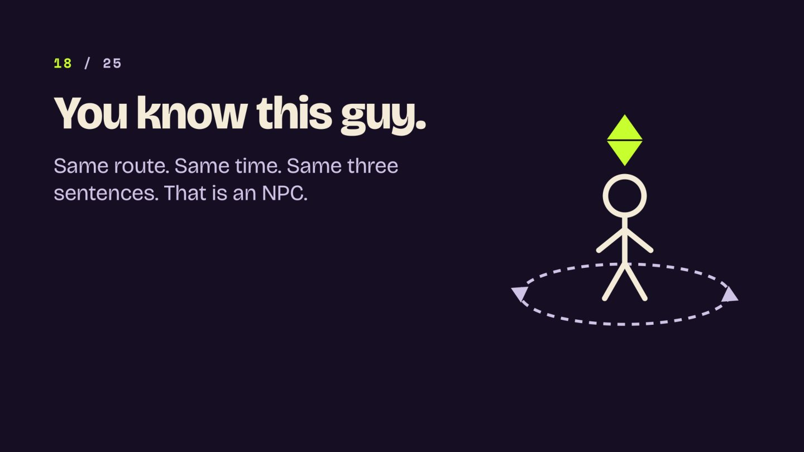
Then came a short comic.
{kind=link}
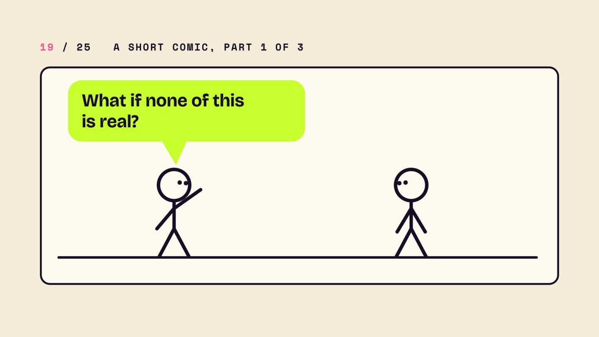
{kind=link}
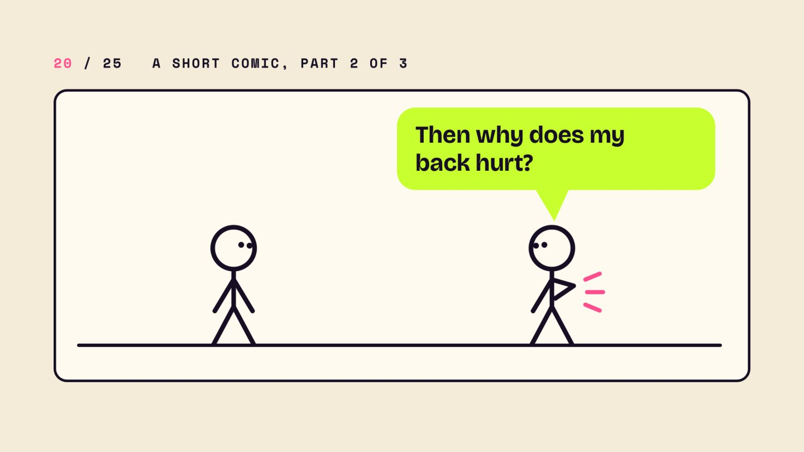
{kind=link}
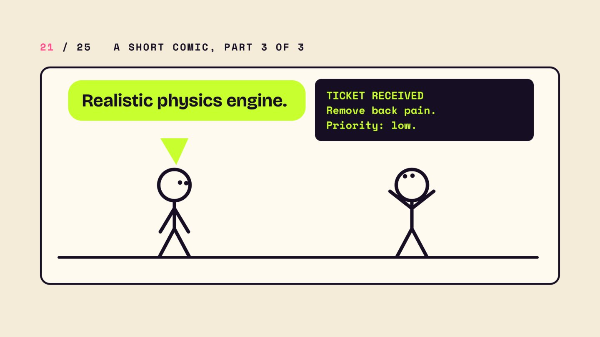
The catch
In 2020 the Columbia astronomer David Kipping ran the numbers and got roughly a coin flip. Nobody can prove any of this, which is exactly what a simulation would want.
For the record, the physics on the slides is real. The conclusions are mine.
If you're in one
I closed with some advice. Be interesting, because boring simulations get switched off. Be kind to the NPCs, since one of them could be the developer. The last slide asked everyone to rate the simulation, because five stars keeps the servers on.
{kind=link}
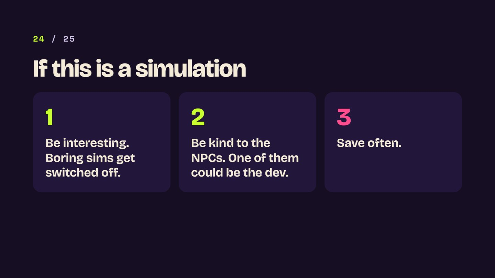
{kind=link}
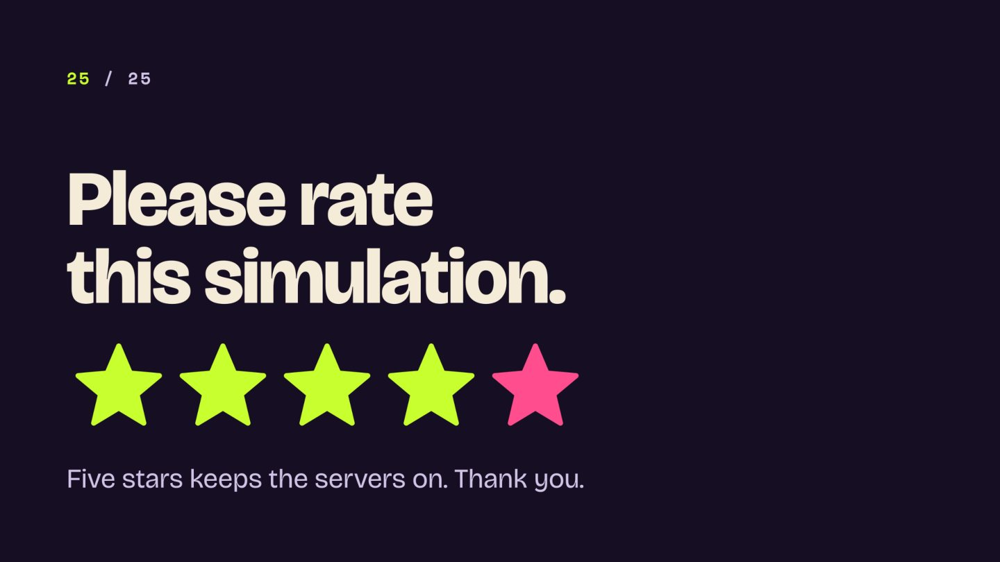
More of these, please
Thank you, Ritah, for hosting. I think more friend groups should hold presentation nights, where everyone picks a topic they care about far too much and defends it with slides. If you're planning one, invite me. I'll bring slides.
The slides are here as a PDF, if you'd like to present them yourself.
Comments
No comments yet.